Пётр I: архитектурное наследие первого российского императора
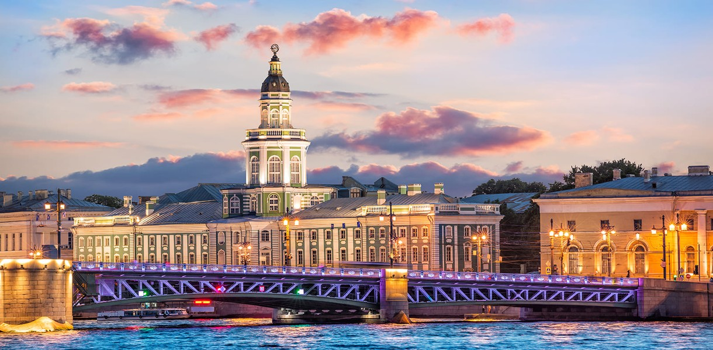Архитектура петровского времени
С восшествием Петра I на престол наступила новая эпоха в развитии градостроительства в России.
Санкт-Петербург застраивали не стихийно, как многие русские города, а согласно чёткому плану,
подражая устройству европейских городов. Прямые улицы, возведение зданий, фасады которых плотно
прилегали друг к другу, создание больших архитектурных ансамблей в едином стиле, обустройство
площадей и системы ночного освещения — всё это было для России в новинку.
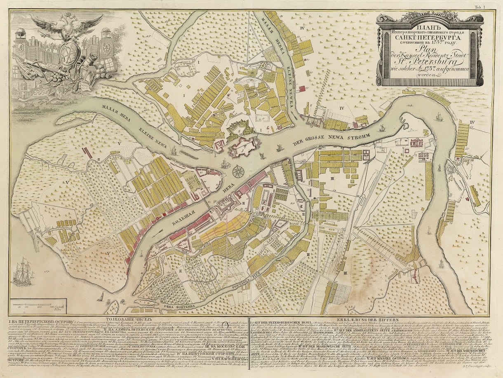
В это время, на заре XVIII века, появляется новое архитектурное направление — петровское барокко,
вдохновлённое голландской и немецкой архитектурой. Простые, симметричные здания с ровными линиями и
сдержанным декором стали первыми постройками, которые определили строгий и одновременно яркий стиль
Санкт-Петербурга.
Какие здания были построены при Петре I
Многие памятники архитектуры Петровской эпохи до сих пор украшают улицы Санкт-Петербурга. Некоторые
из них неоднократно перестраивались, другие — сохранились практически в неизменном виде.
Рассказываем про самые выдающиеся здания XVIII века, построенные при Петре I.
Домик Петра I
Год строительства: 1703
Адрес: Петровская набережная, 6
Адрес: Петровская набережная, 6
Считается старейшим памятником архитектуры в Санкт-Петербурге. «Красные хоромы», как называли первый
«дворец» Петра I, построили в 1703 году из соснового сруба. В крохотном доме (всего 65 квадратных
метров по внешнему периметру) было четыре комнаты: сени, небольшая спальня и чуть более просторные
кабинет и столовая.
Летний дом удивлял своей аскетичностью, несвойственной резиденциям монарших особ. В нём не было даже
печки, а украшениями служили скромная роспись в виде растительных орнаментов на наличниках,
пушка-мортира и ядра на крыше, вырезанные из дерева.
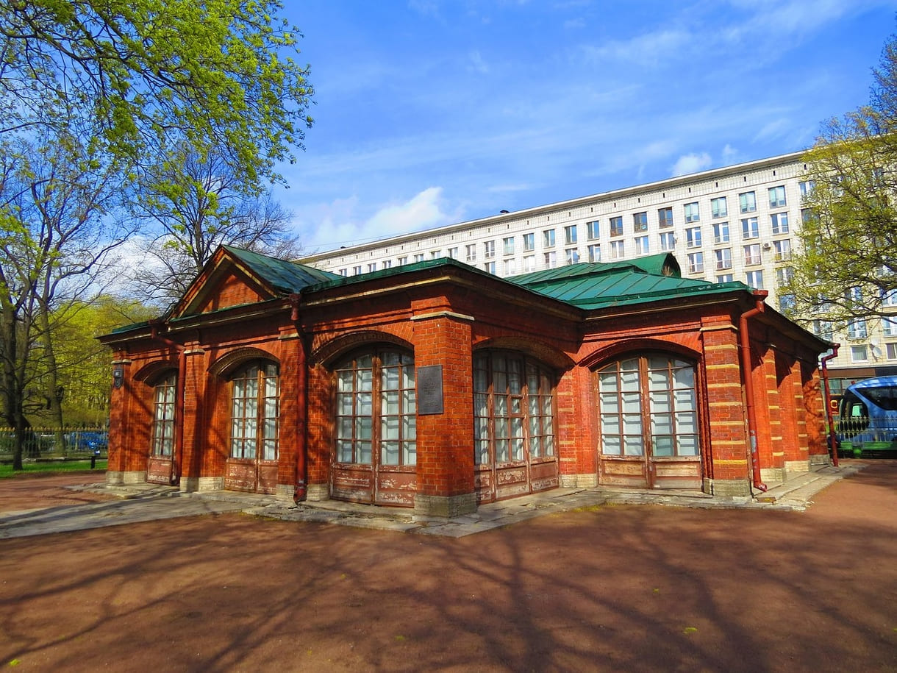
Ещё при жизни императора для защиты от непогоды здание окружили защитной галереей. А в 1844 году
вокруг выстроили более прочный кирпичный футляр, который сохранился по сей день. Сегодня в доме
находится филиал Русского музея, где можно увидеть обстановку, в которой жил император, и его личные
вещи. Например, мундир из красного сукна, трость, обтянутую кожей чёрного ската, изящную трубку из
морской пенки. А по барельефу с оттиском руки Петра I можно проверить, так ли огромна она была, как
говорят (спойлер: не такая уж она и большая!).
Петропавловская крепость
Годы строительства: 1703-1740
Первый камень в её основание Пётр I заложил ещё в 1703 году. Считается, что именно с Петропавловской
крепости начинается Санкт-Петербург. Укрепление, построенное на отвоёванной у шведов земле для
защиты, никогда не участвовало в сражениях, а его пушки палили только в мирных целях. Кстати, если
вы услышали выстрел, не пугайтесь. Это значит, что в Петербурге полдень.
Петропавловская крепость — это шесть бастионов, соединённых крепкими стенами толщиной практически 20
метров. Укрепление задумывалось как мощное фортификационное сооружение, однако на деле стало тюрьмой
для политических заключённых. Здесь находились под стражей сначала декабристы, затем — народовольцы.
В стенах Петропавловки в разное время были заключены А. Н. Радищев, Ф. М. Достоевский, А. М. Горький
и Л. Д. Троцкий.
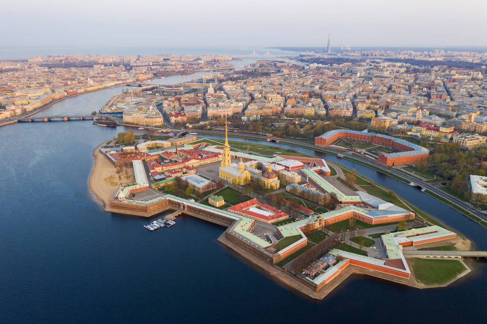
Сегодня Петропавловская крепость входит в состав Государственного музея истории Санкт-Петербурга.
Здесь можно посетить Петропавловский собор и Комендантский дом с экспозицией о строительстве города
и Тюрьму Трубецкого бастиона с воссозданными камерами знаменитых узников. А в местном Музее истории
денег стоит не только познакомиться с экспонатами, но и поучаствовать в мастер-классе: самому
создать лист бумаги по старинной технологии.
Петропавловский собор
Годы строительства: 1712-1732
Находится в самом центре Петропавловской крепости. Сначала на его месте построили деревянную
церковь, но в 1712 году начали возводить новый каменный собор под руководством Д. Трезини.
Строительство продолжалось 20 лет. Пётр I распорядился сначала возвести колокольню, да не простую, а
с часами и шпилем, как у европейских церквей. Часы заказали в Голландии, а на изготовление
золочёного 40-метрового шпиля с фигурой летящего ангела ушло целых пять лет. К 1732 году все работы
были закончены, а через 24 года в шпиль ударила молния, вызвав сильнейший пожар, и всё пришлось
начинать заново.
Колокольню восстановили, повесили новые часы, воссоздали ангела, а шпиль оборудовали молниеотводом.
Кстати, ангела неоднократно приходилось ремонтировать — из-за ураганных ветров. и всякий раз
отважные мастера работали в опасных условиях — на 122-метровой высоте.
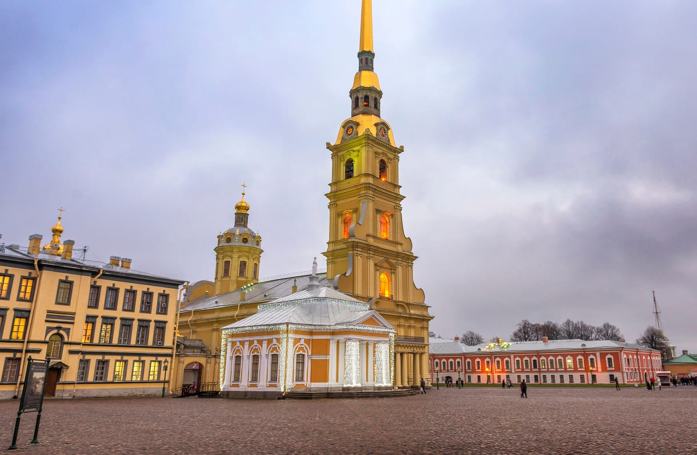
Когда столицу из Москвы перенесли в Санкт-Петербург, Петропавловский собор стал усыпальницей
практически всех правителей Российской Империи и членов их семей. В начале XIX века, когда места в
соборе стало не хватать, по приказу Николая II к нему пристроили здание Великокняжеской усыпальницы.
В 1998 году здесь захоронили останки последнего императора и его семьи.
Адмиралтейство
Годы строительства: 1704-1706
Адрес: Адмиралтейский проспект, 1
Адрес: Адмиралтейский проспект, 1
Город мечты Петра I не мог обойтись без судостроительной верфи на Балтийском море. Поэтому на
следующий год после основания Петропавловской крепости император заложил здание Адмиралтейства.
Считается, что Пётр I сам выбрал место и придумал план будущего строения. По приказу императора была
возведена одноэтажная постройка в форме буквы «П» с сараями, кузницами и мастерскими. На случай
нападения шведов все сооружения обнесли земляным валом и возвели пять бастионов. Уже через год верфь
могла принять на зимовку небольшую флотилию.
В 1727 году порядком обветшавшие корпуса решили реконструировать. Работы поручили архитектору И. К.
Коробову. Двухэтажное здание нового каменного Адмиралтейства повторяло прежнюю П-образную
планировку, но стало более величественным за счёт башни, украшенной позолоченным шпилем с флюгером в
виде кораблика. Реконструкция завершилась в 1738 году.
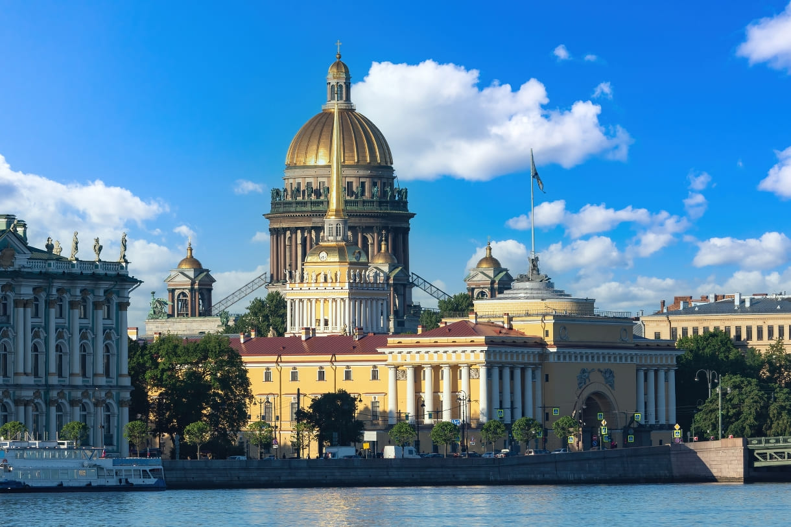
К началу XIX века вокруг Адмиралтейства выросли пышные дворцы, величественные соборы и важнейшие
правительственные здания, с которыми судостроительная верфь стилистически не гармонировала. За
решение этой проблемы взялся архитектор А. Д. Захаров. Он сохранил планировку Коробова, но добавил
украшения в виде портиков, сузил центральную башню со шпилем, украсив её скульптурами и часами, и
переоборудовал внутренние помещения под административные комнаты. Здесь строили корабли до 1844
года, после в здании находились Военно-морское училище, а ныне — центральный штаб ВМФ.
Летний дворец
Годы строительства: 1711-1712
Адрес: Летний сад, литер А
Адрес: Летний сад, литер А
В 1712 году Пётр I перебрался в новую резиденцию — Летний дворец, построенный под руководством
архитектора Д. Трезини. Этот строгий двухэтажный каменный дом — яркий пример архитектуры петровского
барокко. Фасады дворца украшают терракотовые барельефы с изображением сцен сражений в Северной
войне, а крышу — позолоченный флюгер с Георгием Победоносцем и оригинальные водостоки в виде
драконов.
Внутри дворца находилось 14 комнат и две кухни, соединённые коридорами. Для императорского дворца
убранство было довольно простым, зато практичным. Сосновые шкафы, изразцовые печи, живописные
плафоны на потолке, расписанные швейцарским художником Г. Гзеллем — почти всё здесь сохранилось до
наших дней.
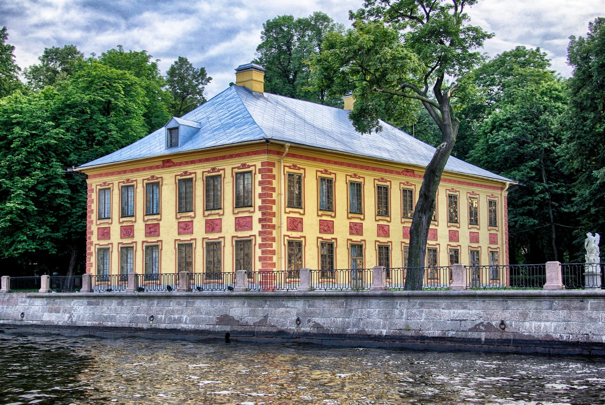
Сейчас Летний дворец входит в состав Русского музея. Помимо великолепных интерьеров, здесь можно
увидеть личные вещи императора и предметы одежды. Особо ценный экспонат — прибор в Кабинете Петра I,
показывающий время, силу, скорость и направление ветра. Это три настенных круглых табло в деревянной
раме, два из которых соединены с флюгером на крыше. Устройство Петровской эпохи до сих пор работает.
Меншиковский дворец
Годы строительства: 1710-1714
Адрес: Университетская набережная, 15
Адрес: Университетская набережная, 15
Считается первым по-настоящему роскошным дворцом Северной столицы. Трёхэтажное каменное здание с
мансардой и двумя корпусами построили для соратника Петра I и первого губернатора Санкт-Петербурга —
А. Д. Меншикова. Центральный корпус возвели довольно быстро, а вот отделка залов заняла 10 лет.
Меншиковский дворец использовался не только как жилые палаты губернатора: здесь также устраивали
светские и деловые приёмы.
Дворец Меншикова — ещё один яркий образец архитектуры петровского барокко с часто расставленными
окнами и ровными линиями. Украшенный пилястрами, скульптурами древнеримских богов и княжескими
вензелями дворец гордо возвышается над берегом Невы.
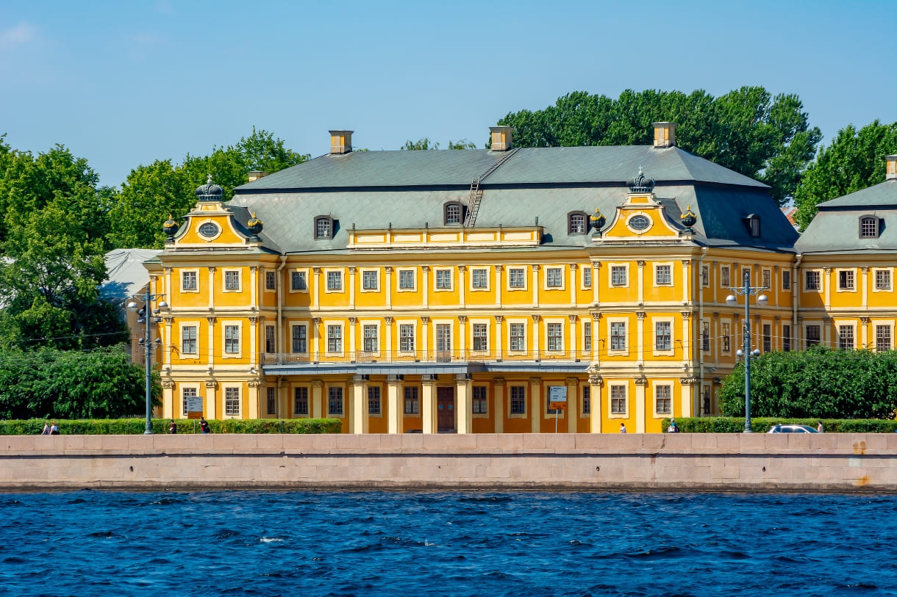
После опалы на Меншикова, его ареста и ссылки, во дворце разместили Сухопутный шляхетский корпус
(позже — Первый кадетский корпус). Здание начали перестраивать и менять фасад. В 1960-е исторический
облик восстановили, а в 1980-е передали дворец в ведение Эрмитажа. Сегодня здесь можно увидеть
великолепное убранство Орехового кабинета с декором из натурального дерева и живописной росписью на
потолке и несколько комнат, стены и потолок которых полностью отделаны фаянсовой сине-белой плиткой.
Палаты Кикина
Годы строительства: 1714
Адрес: улица Ставропольская, 9
Адрес: улица Ставропольская, 9
Роскошная усадьба была построена в 1714 году для ещё одного царского любимца — первого начальника
Петербургского адмиралтейства Александра Кикина. Изначально постройка была «ступенчатой» с
двухэтажной центральной частью и одноэтажными боковыми. Палаты Кикина — довольно строгое, но яркое
здание, украшенное ризалитами и завитками у основания фронтонов.
Пожить в роскошных палатах Кикину удалось совсем недолго. В 1718 году его обвинили в государственной
измене и казнили. Сначала в бывших палатах разместили первые экспонаты Кунсткамеры и петровскую
библиотеку и, чтобы расширить пространство, надстроили ещё один этаж. В 1730-е в здании расположился
штаб Конной гвардии, и палаты снова подверглись перестройке. В Большом зале на втором этаже открыли
полковую церковь, а над зданием возвели купол. В последующие годы палаты лишились своего
великолепного убранства, а во время Великой Отечественной войны практически полностью были
разрушены.
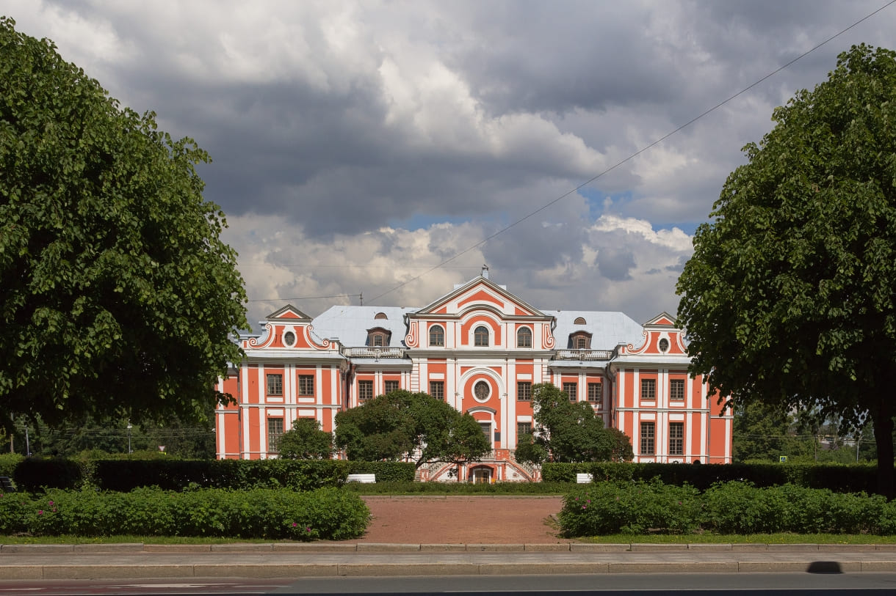
В 1950-х памятник Петровской эпохи решили реконструировать. Благодаря исследованиям архитектора
Ирины Бенуа, исторический облик палат был восстановлен максимально точно. Сейчас в роскошном здании
находится музыкальный лицей, и из открытых окон доносятся певучие переливы разнообразных мелодий.
Монплезир
Годы строительства: 1714-1723
Адрес: Петергоф, Нижний парк
Адрес: Петергоф, Нижний парк
В 1714 году начинается строительство любимого дворца Петра I в Петергофе. Небольшой одноэтажный
особняк расположился в окружении живописного сада на берегу Финского залива. Как и другие резиденции
императора, Монплезир, или как его иногда называют, «Голландский домик» представляет собой простую и
лаконичную постройку. От центрального кирпичного корпуса отходят две галереи с большими арочными
окнами и остеклёнными дверями, которые добавляют зданию лёгкости.
Это один из немногих памятников архитектуры Петровской эпохи, который ни разу не перестраивался и
сохранил большую часть интерьера. Здесь можно увидеть коллекцию картин XVII-XVIII веков, собранную
лично императором, и роскошную лепнину на купольном потолке Парадного зала.
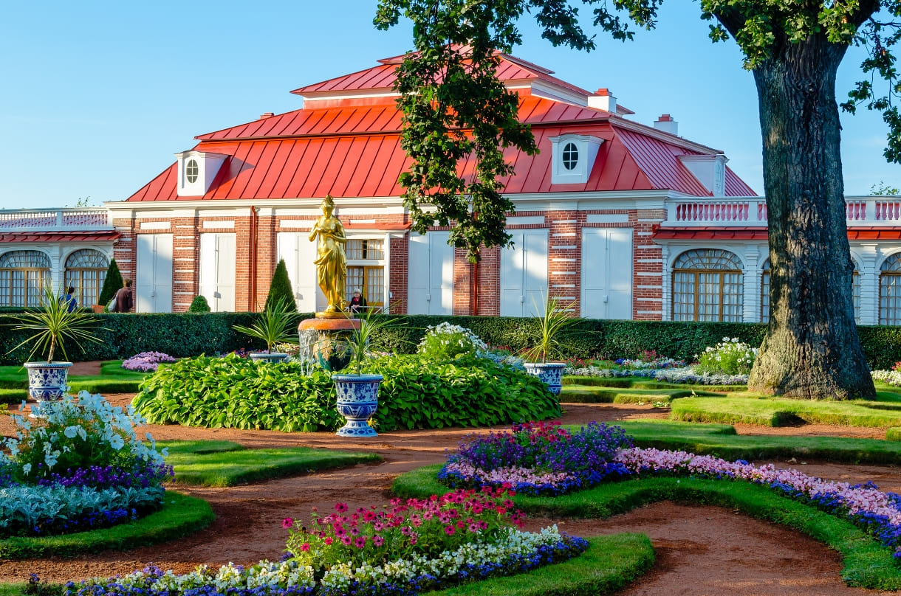
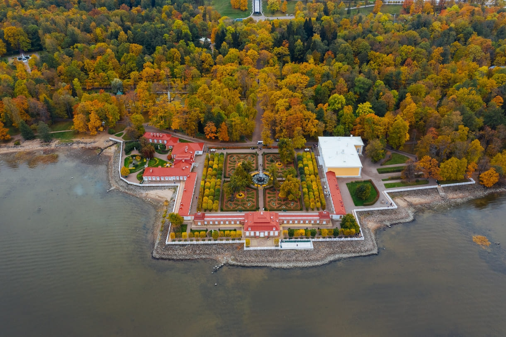
В Лаковом кабинете впечатляют великолепные стены, расписанные золотом и серебром в китайском стиле.
Всего для оформления комнаты было создано около 94 панно, сюжеты которых не повторялись. Художники
трудились над их созданием два года. А ещё в кабинете представлена обширная коллекция изящных ваз и
чашек из восточного фарфора.
Зимний дворец Петра I
Годы строительства: 1715-1723
Адрес: Дворцовая набережная, 32
Адрес: Дворцовая набережная, 32
Постройка Петровской эпохи, которую часто называют исчезнувшим дворцом, и неспроста. Стоявший
некогда на берегу Невы Зимний дворец Петра долгое время считался утраченным. На самом деле он
оказался буквально замурованным внутри здания Эрмитажного театра.
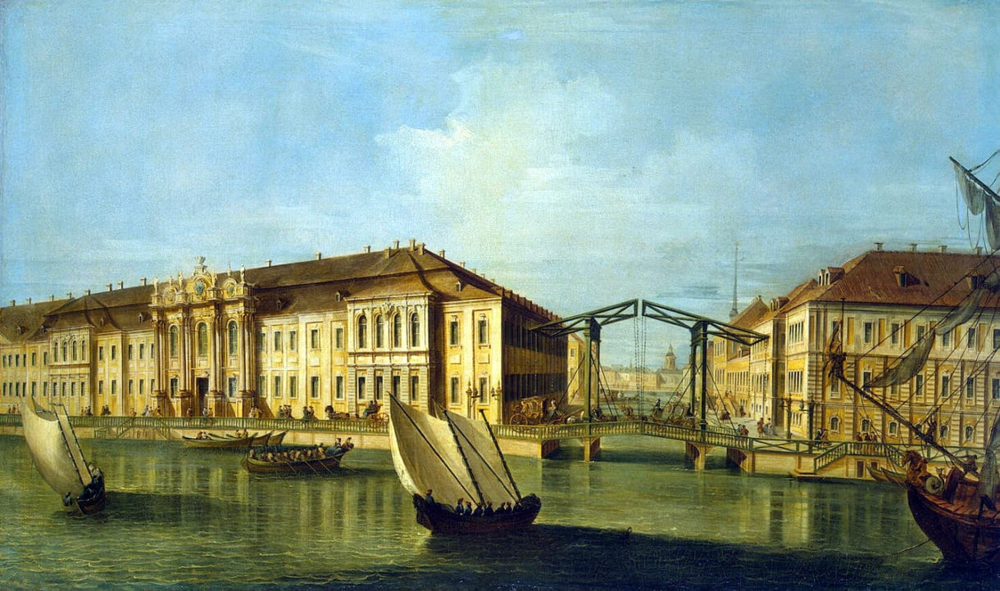
В 1715 году началось строительство Зимнего дворца для Петра I. Кстати, уже третьего по счёту, так
как предыдущие два не отвечали требованиям царской семьи. Немецкий архитектор Г. И. Маттарнови
спроектировал строгое двухэтажное здание с флигелем, где располагались покои императора. Но вскоре
Пётр I решил увеличить дворец. В 1723 году его перестроили, сделав более просторным и нарядным.
Именно здесь в 1725 году в своём кабинете скончался император.
После смерти Петра дворец претерпел ещё несколько перестроек, пока Екатерина II не пожелала возвести
на его месте Эрмитажный театр. Архитектор Д. Кваренги, стеснённый во времени, использовал дворец в
качестве основы для нового строения.
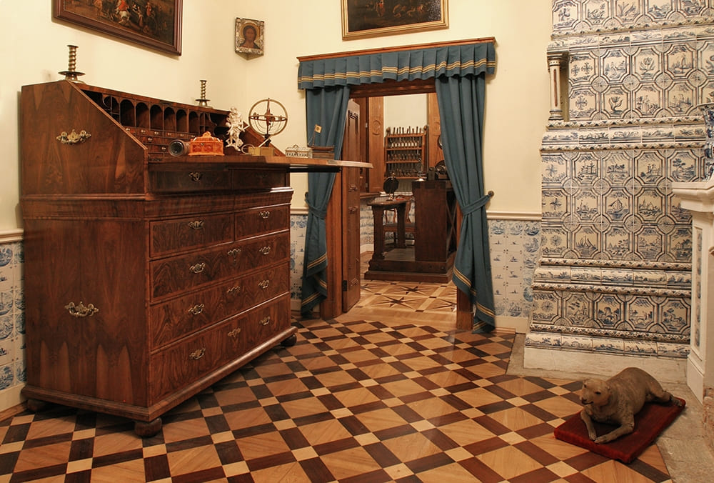
В 1992 году после проведения исследовательских и археологических работ были восстановлены несколько
помещений Зимнего дворца Петра I. Теперь в здании Эрмитажного театра можно увидеть воссозданный
кабинет императора с конторкой, мастерскую со старинным токарным станком и восковую фигуру, которой
почти 300 лет, — посмертный портрет Петра.
Троицкий Александро-Невский монастырь
Годы строительства: 1713-1797
Адрес: набережная реки Монастырки, 1
Адрес: набережная реки Монастырки, 1
Новая столица не могла обойтись без монастыря. Для возведения главной петербургской обители Пётр I
выбрал особое место, где, по преданию, Александр Невский разгромил шведов. Первую деревянную
Благовещенскую церковь освятили в 1713 году, положив начало будущей Свято-Троицкой
Александро-Невской лавре.
В 1717 году началось строительство монастыря по проекту Д. Трезини. Архитектор спроектировал
комплекс соединённых друг с другом каменных корпусов с угловыми башнями, церквями и главным Троицким
собором в центре.
Через два года появилось первое каменное сооружение ансамбля будущей лавры. На месте старой
деревянной построили новую двухэтажную Благовещенскую церковь, украшенную пилястрами, лепниной и
гранёным куполом. Храм считается старейшим в Санкт-Петербурге. В 1720 году в подвале церкви начали
строить усыпальницу для царской семьи и вельмож. Здесь были захоронены царица Прасковья Фёдоровна
(жена Ивана V Алексеевича) цесаревич Пётр (первенец Петра I), князь А. М. Голицын,
генерал-фельдмаршал А. Р. Разумовский. А ещё через четыре города в храм перенесли святые мощи
Александра Невского из Владимира.
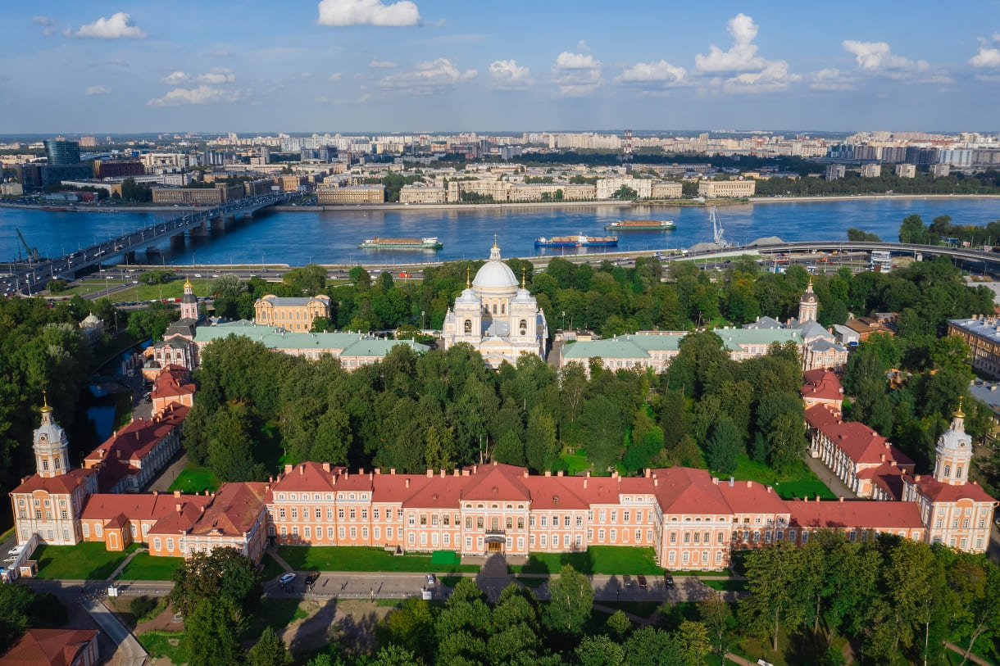
С 1722 года на территории монастыря началось возведение главного Свято-Троицкого собора (из-за
инженерных ошибок спустя 30 лет его пришлось перестраивать), а также четырёх корпусов, угловых башен
и нескольких церквей. В общей сложности строительство длилось практически 90 лет. В 1797 году
монастырь получил статус лавры.
Кунсткамера
Годы строительства: 1718-1734
Адрес: Университетская набережная, 3
Адрес: Университетская набережная, 3
С 1718 года начинается строительство ещё одного памятника Петровской эпохи — публичного музея с
коллекциями редкостей и императорской библиотекой.
Величественное здание на берегу Невы открыло свои двери для публики в 1728 году (хотя стройка
продолжалась ещё шесть лет) и стало первым музеем в истории России. Фасад был декорирован вазонами и
12 резными статуями из липового дерева (ныне утрачены). А главным украшением Кунсткамеры стала
башня, увенчанная армиллярной сферой (астрономический инструмент для определения координат) —
символом науки и вселенной. Правда, в 1747 году пожар сильно повредил здание, уничтожив башню. Позже
её восстановили, а вот новая сфера из титанового сплава украсила сооружение только в 1949 году.
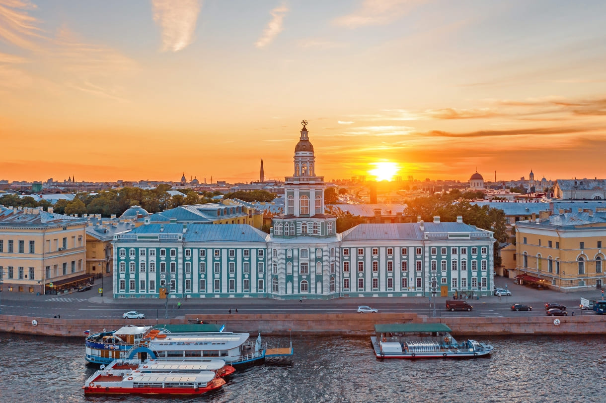
В 1724 году Пётр I учредил создание Академии наук. В её состав вошла Кунсткамера, коллекции которой
стали научной базой для деятельности учёных. А академические экспедиции обеспечивали музей новыми
экспонатами, привезёнными из разных уголков мира.
В середине XVIII века в здании располагались несколько залов библиотеки, анатомический театр,
астрономическая обсерватория, а также коллекции препаратов с человеческими органами, собрание
минералов и изделий из драгоценных металлов, чучела животных и гербарии. Богатая экспозиция
Кунсткамеры постоянно пополнялась, а в XIX веке, когда экспонатов стало так много, что места
перестало хватать, многие коллекции были переданы в специализированные музеи.
На сегодняшний день в фондах музея хранится более миллиона экспонатов, большая часть которых была
собрана ещё в XVIII веке. На протяжении всего времени существования Кунсткамеры её коллекции
постоянно росли и продолжают пополняться сегодня.
Дворец Марли
Годы строительства: 1720-1723
Адрес: Петергоф, улица Разводная, 2
Адрес: Петергоф, улица Разводная, 2
Простой, но грациозный двухэтажный дворец расположен в западной части Нижнего парка Петергофа.
Окружённый садами, живописными прудами и каскадным фонтаном, он предназначался для приёма именитых
особ. Марли украшен скромно: пилястрами с кирпичным рисунком и ажурными решётками на балконах.
Внутренняя отделка тоже проста, но весьма изысканна.
При строительстве дворца впервые в России была использована новая система планировки, где комнаты
связывали не центральные залы, как раньше, а коридоры. Всего в Марли было 14 комнат: спальня, буфет,
несколько кабинетов и гостиных, библиотека и столовая.
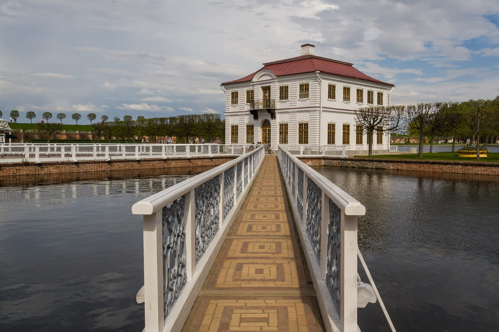
После смерти Петра I дворец начал превращаться в мемориальный музей. Здесь были собраны личные вещи
императора, подарки и картины из личной коллекции. Сейчас в экспозиции можно увидеть предметы XVIII
века (например, английскую оловянную и фарфоровую китайскую посуду на кухне и в буфетной) и картины
известных западноевропейских художников в Чинаровом и Дубовом кабинетах. А ещё старинную мебель и
библиотеку, которая на сегодняшний день хранит 69 книг петровских времён.
Здание государственных коллегий
Годы строительства: 1722-1742
Адрес: Менделеевская линия, 2
Адрес: Менделеевская линия, 2
Новой столице России необходимы были здания для двенадцати петровских коллегий (аналог современных
министерств). Строительных материалов в Санкт-Петербурге катастрофически не хватало, и, чтобы
сэкономить средства казны, архитектор Д. Трезини предложил объединить 12 корпусов коллегий в один —
с общим длинным фасадом, но отдельными входами.
Уже через год после начала строительства Пётр I начал вносить коррективы в первоначальный план и
даже устроил конкурс на лучший архитектурный проект. Так, первый этаж коллегий был возведён по плану
Трезини, а второй и третий — по чертежам Т. Швертфегера. Полностью работы были завершены только
через 20 лет.
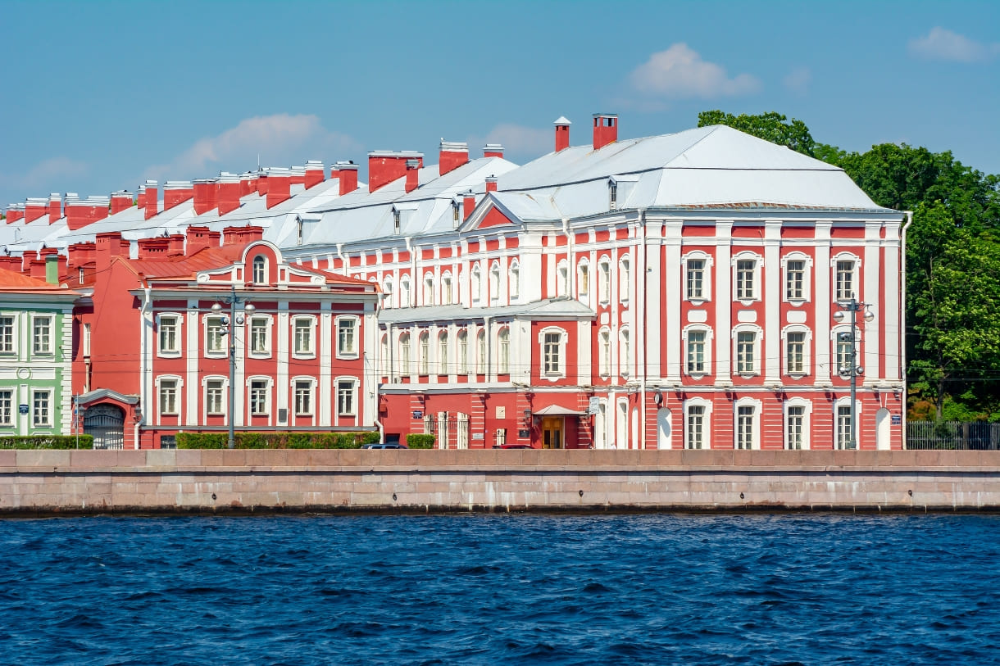
Правительственное здание долгое время считалось самым длинным в Санкт-Петербурге (почти 400 метров).
Оно выкрашено в красный цвет, декорировано пилястрами и эмблемами коллегий, а через весь первый этаж
проходит открытая галерея, ниши которой раньше украшали статуи. Коллегия работала в здании до начала
XIX века, а после его передали Педагогическому университету, который до сих пор располагается в этих
стенах.
Заключение
В Санкт-Петербурге и его окрестностях сохранилось множество памятников архитектуры Петровской эпохи.
Они пережили перестройки, разрушения и реконструкции, но до сих пор восхищают великолепными фасадами
и пышным внутренним убранством. На изучение архитектурного наследия Петра I лучше закладывать
несколько дней, а за помощью с планированием маршрута — обратиться к местным гидам.
На вверх страницы
Содержание:
- Архитектура петровского времени
- Какие здания были построены при Петре I
- Домик Петра I
- Петропавловская крепость
- Петропавловский собор
- Адмиралтейство
- Летний дворец
- Меншиковский дворец
- Палаты Кикина
- Монплезир
- Зимний дворец Петра I
- Троицкий Александро-Невский монастырь
- Кунсткамера
- Дворец Марли
- Здание государственных коллегий
- Заключение